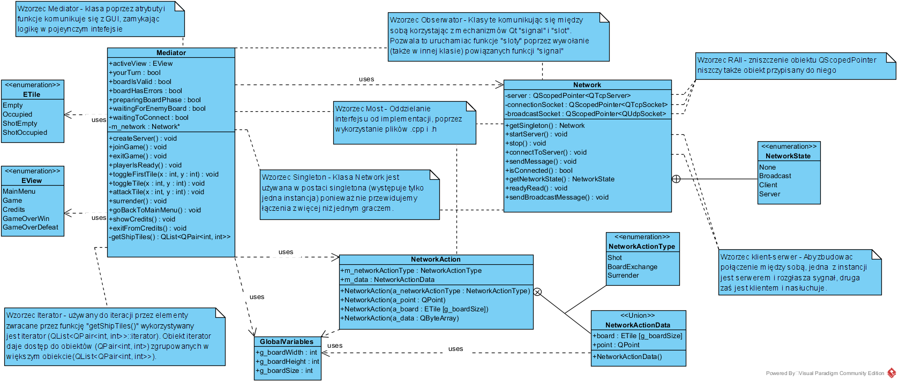
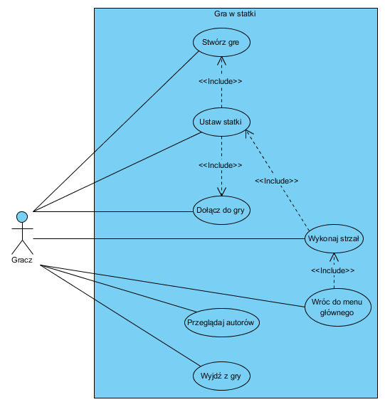
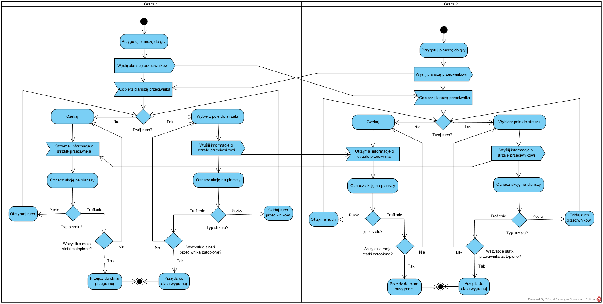
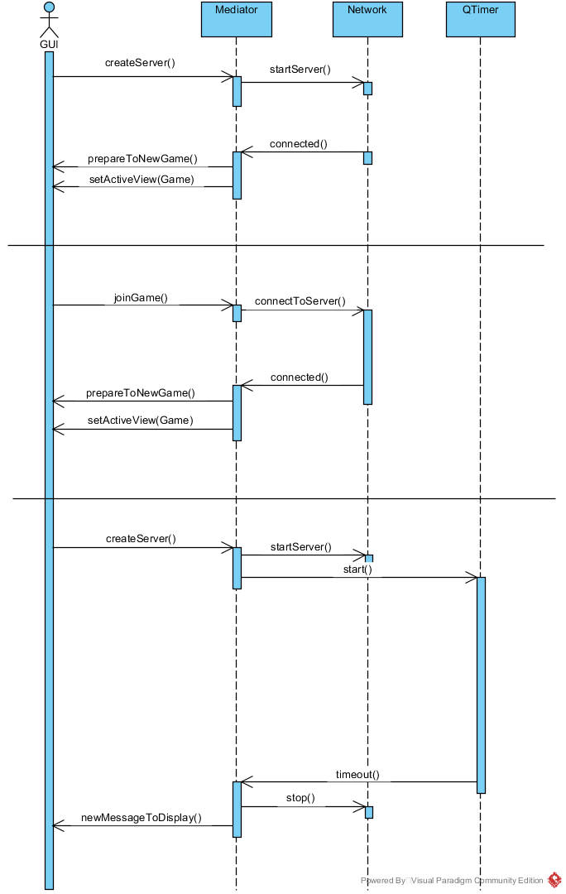
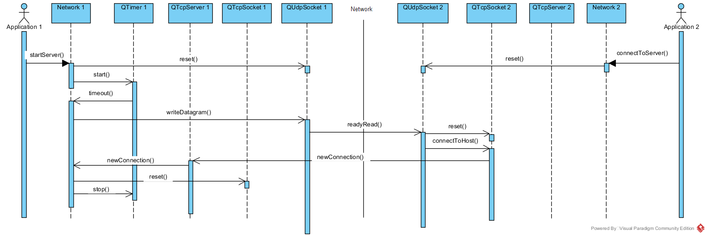
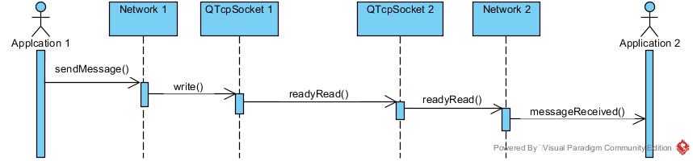
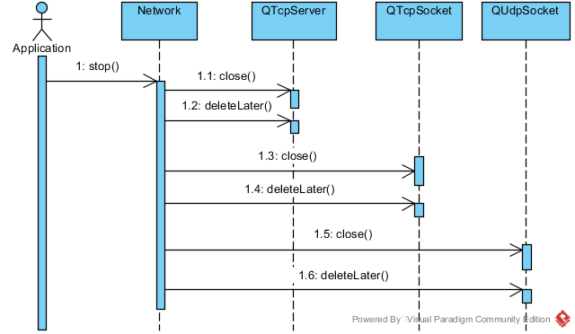

Inżynieria Oprogramowania
Dokumentacja gry "Statki"
Pliki źródłowe diagramów znajdują się w folderze "docs" w repozytorium.
Spis Treści
1. Opis projektu
- Cele
- Założenia
- Problemy
- Podstawowe moduły
2. Moduły
- Mediator
- Network
- NetworkAction
- ViewsManager
3. Wzorce projektowe
- Klient-Serwer
- Obserwator
- Singleton
- Mediator
- Most
- RAII
- Iterator
1. Opis projektu
Cele
Celem projektu jest stworzenie sieciowej, dwuosobowej, multiplatformowej gry - Statki oraz dokumentacji projektowej aby otrzymać zaliczenie z przedmiotu Inżynieria Oprogramowania.
Założenia
- W grze bierze udział 2 graczy
- Gra odbywa się w sieci lokalnej (LAN)
- Zespól projektowy składa się z 2 osób
- Gra jest wykonana w technologii multiplatformowej Qt (C++/QML) co pozwala na jej uruchomienie na bardzo wielu systemach operacyjnych (m.in Windows, Linux, OS X, Android, iOS, ...)
- Obaj gracze musza znajdować się w tej samej sieci LAN, aby nawiązać połączenie
- Połączenie dwóch graczy odbywa się automatycznie, tworząc stół gracz zaczyna rozgłaszać swój adres w sieci, dołączający do stołu nasłuchuje i gdy napotka na wiadomość, dołącza do serwera
- Kod źródłowy przechowywany jest na repozytorium github i jest objęty licencją LGPL-3.0
Problemy
- Termin oddania projektu
- Dostępność czasowa członków zespołu
- Zerowy budżet :)
Podstawowe moduły
- Moduł GUI (pliki QML) - odpowiadają za warstwę wizualną aplikacji i interakcje z użytkownikiem
- Moduł sieciowy - odpowiada nawiązanie połączenia i wymianę danych z drugim graczem
- Moduł logiczny - spaja oba powyższe moduły
2. Moduły
Diagram klas wykorzystanych w projekcie (kliknij, aby powiększyć): 
{kind=link}
Diagram przypadków użycia (kliknij, aby powiększyć): 
{kind=link}
Diagram aktywności dla przebiegu rozgrywki (kliknij, aby powiększyć): 
{kind=link}
Mediator
Służy do łączenia logiki gry z GUI. cała komunikacja przetwarzana jest właśnie przez tę klasę.
Diagram sekwencji procesu tworzenia/dołączania do nowej gry (kliknij, aby powiększyć):

{kind=link}
Zmienne readonly, ich zmiana wywołuje aktualizację GUI:
-
EView::View activeView- ekran wyświetlany aktualnie przez GUI -
bool yourTurn- czy trwa tura gracza -
boardIsValid- czy plansza zawiera potrzebne statki -
boardHasErrors- czy statki są ustawione poprawnie -
preparingBoardPhase- czy trwa faza przygotowywania gry -
waitingForEnemyBoard- czy przeciwnik przygotowuje planszę do gry -
waitingToConnect- czy trwa oczekiwanie na połączenie Moduł łączący logikę zapisaną w C++ z GUI pisanym w QML. Obsługa rozpoczę
Funkcje wykorzystywane przez GUI:
-
void createServer()- utwórz serwer gry -
void joinGame()- dołącz do gry -
void exitGame()- zamknij grę -
void playerIsReady()- zaakceptuj przygotowaną planszę -
void toggleFirstTile(int x, int y)- przestaw pierwsze pole planszy -
void toggleTile(int x, int y)- przestaw pole planszy -
void attackTile(int x, int y)- zaatakuj pole -
void surrender()- poddaj się -
void goBackToMainMenu()- wróc do głównego menu -
void showCredits()- wyświetl napisy końcowe -
void exitFromCredits()- zamknij napisy końcowe
Sygnały nasłuchiwane przez GUI:
-
prepareToNewGame()- przygotuj się do nowej gry -
renderShip(int id, int x, int y)- wyświetl statek na planszy -
removeShip(int id)- usuń statek z planszy -
renderShot(int x, int y, bool accurate, bool enemyBoard)- wyświetl strzał na planszy. Jeśliaccurate == true, to trafiony został statek. JeślienemyBoard == true, strzał został wykonany na planszy przeciwnika. W przeciwnym razie strzał został oddany na naszej planszę. -
newMessageToDisplay(QString message)- wyświetl krótką wiadomość
Network
Klasa odpowiedzialna za łączenie graczy ze sobą oraz komunikacji
poprzez sieć. Jest wykorzystywana w postaci singletona w klasie Mediator.
Diagram sekwencji procesu tworzenia nowego połączenia sieciowego (kliknij, aby powiększyć): 
{kind=link}
Diagram sekwencji procesu przesyłania i odbierania danych (kliknij, aby powiększyć): 
{kind=link}
Diagram sekwencji procesu zamykania połączenia (kliknij, aby powiększyć): 
{kind=link}
NetworkAction
Pojedyncza akcja przesyłana przez sieć. Możliwe rodzaje akcji to "Shot", "BoardExchange", "Surrend".
ViewsManager
Obiekt odpowiedzialny za zmianę aktualnie wyświetlanego ekranu. Nasłuchuję na zmienną activeView, klasy Mediator i w zależności od jej wartości aktywuje odpowiedni widok.
3. Wzorce projektowe
Klient-Serwer
Gracz tworzący grę jest serwerem - udostępnia usługę gry i czeka na połączenie gracza dołączającego, który jest klientem.
Klient
Serwer
Obserwator
Cały mechanizm sygnałów w Qt działają w oparciu o ten wzorzec. Kiedy
łączymy jakiś slot do sygnału to sygnał staje się obserwowanym, a sloty
do niego podłączone - obserwującymi.
Łączenie sygnału ze slotem
Singleton
Klasa Network jest singletonem, ponieważ nie przewidujemy połączenia z więcej niż jednym graczem podczas rozgrywki.
Network.h
Mediator
Klasa Mediator jak sama nazwa wskazuje jest mediatorem,
ponieważ komunikuje się innymi klasami, którymi zarządza, a do QML'a
wystawia tylko prosty interfejs
Mediator
Most
Wszystkie klasy (c++) w tym projekcie korzystają z tego wzorca, ponieważ
oddzielają interfejs od implementacji rozmieszczając je odpowiednio w
plikach *.h i *.cpp.
RAII
Zabór Zasobu Jest Inicjalizacją (Resource Acquisition Is Initialization) - z tego wzorca korzysta klasa Network, ponieważ używa QScopedPointer który w momencie jego niszczenia, niszczy tez obiekt przypisany do niego, w tym przypadku sockety i serwer.
Network.h
Iterator
Obiekt zapewniający sekwencyjny dostęp do podobiektów zgrupowanych w większym obiekcie.
Mediator.cpp